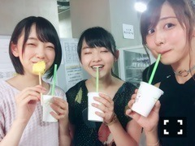

| 2016/08 15 Mon | 食べ物が好き。(´>∀<｀)ゝ |
ちはるーむへようこそ！
仙台の写真を漁っていたら、
食べ物の写真ばっかりだった。。！！
・牛タン
メンバーみんな1人一皿、チケット制には
不服なご様子でした(_ _).｡o○笑
来年には1人2皿制度にならないかな(_ _).｡o○
・かき氷
小学生の頃は
ブルーハワイやレモンが
大好きだったんだけど
少しずつ大人になるにつれて
いちごや抹茶が好きになってきた！！
特に好きなのは
いちご練乳♡♡
練乳をかければかけるほど好き。
でもシロップの
いちごやレモン、メロン、ブルーハワイ
とかの主要なシロップは
本当は全部同じ味なんだって！！
色に騙されてるんだって！！
これ知った時、びっくりした(> <)！！
脳って凄いね〜〜(> <)
・ラムネ

ラムネの中に入ってるビー玉が
何故か昔から大好き！！
ラムネといえばビー玉入りが好き♪
でも開ける時にラムネが溢れてきちゃって
いつも大変な思いをしてる(_ _).｡o○笑
・ずんだシェイク
(またしても。)

みおなと万理華と♡
ずんだシェイクにこの笑顔！！
弾けてる！！
笑ってる女の子好き〜♡
可愛い。
と！！
今日は食べ物尽くしでした！
皆さんに飯テロ〜〜( ˙³˙)
って思ってたけど
自分がお腹すいてきちゃったよ(> <)笑
-------------------------♡
♬ ChihaMusic
「ラフメイカー」BUMP OF CHICKENさん
この曲も中学生の頃から今も聞いてる。
泣いてる時にラフメイカーが
来てくれたら、
助けに来てくれたらいいのにな〜って
昔から思ってた :-)笑
私も泣き顔酷いかもしれないから
笑顔になれそう。笑
明日台風来るんだね( ;o; )
今日ずっと頭痛かったのは
低気圧の影響だったんだ(> <)
皆さん台風に気を付けてね！！(> <)
内容少なくてごめんね(..)
おやすみ(｡･o･｡)ﾉ
斎藤ちはる
コメント(259)
2016/08/15 23:24